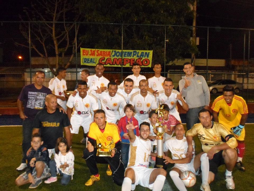

A Jovem Plan é um clube de futebol amador de Planaltina, Distrito Federal, Brasil. Fundado em 2007 por um grupo de amigos para fazerem aquilos que mais gostavam, jogar futebol, até que em 2011, Raphael Araújo, fundador, capitão e presidente do clube, decidiu colocar o clube em um campeonato amador do bairro, Jardim Roriz. Com um ano de campeonato, a Jovem Plan ganha seu primeiro campeonato em dezembro de 2012.
/instagram- Nos siga lá no instagram
/X - Nos siga no x (Twitter)
/Tiktok - Nos siga também la no tik tok